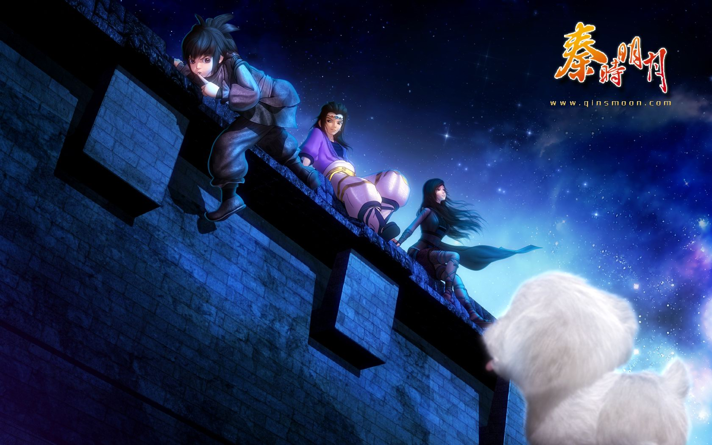

水墨.春秋
夜尽天明
"该动画是一部针对海内外广阔年龄层(官方宣传时一般说"全龄段，但主要针对12岁以上"。新官网首页右下角写的则是“适龄年龄15岁以上”。)市场推出的3D武侠作品，引领观众亲历两千年前风起云涌、瑰丽多姿的中土世界。故事背景取自秦始皇灭六国到西楚霸王项羽灭秦这段英雄辈出的历史时期，时间跨度约30年，是一部以武侠为主题的全民型动画。各种历史事件和民间传说纷呈迭起，仗剑游走江湖的名士侠隐和对现代中国产生深远影响的诸子百家更是在这个合纵连横的大时代中悉数登场。 百家争鸣的中华古文化在此激烈冲突碰撞，大时代恢宏磅礴的战争场面在连天烽火中震撼重现，江湖儿女的侠骨柔情于动荡乱世间绽放光华……少年天明如杂草般顽强生存于时代变革的乱世之中，面对强暴的政权、险恶的敌人，勇敢地与侠士们进行反抗，经历了一段不俗的遭遇。 观众会切身体会到其成长的心灵历程；此外，豪侠剑客如盖聂、高渐离；神秘隐士如墨家、阴阳家及各门各派的众多高手；纵横捭阖的秦始皇、项羽，这些众所周知的历史人物在出场时有了更具时代感的表现。丰富的人性化场景能吸引观众自然而然融入其中，不同年龄层的观众都可在剧中找到萌点。 分部介绍 每集开篇题词:历史为骨，艺术为翼;中华文明，宏扬百世。